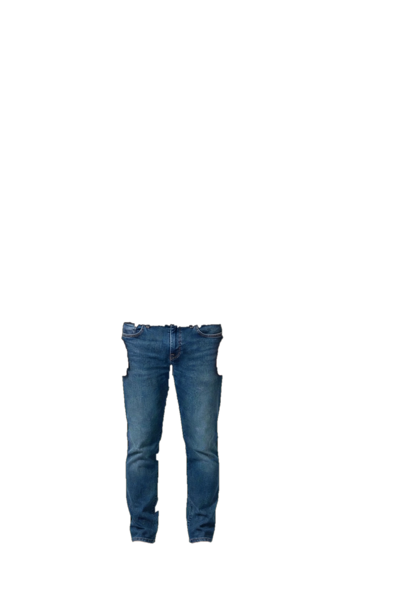

Prototype — avatar en couches (le magasin actuel n'est pas touché)

Base sans manches : le défaut de la bande noire sous les manches est corrigé — la nouvelle base est en débardeur noir.
Vérifié : toutes les photos recalées au même standard (tête y≈262, pieds y=1556, hauteur ≈179,7 cm, axe x≈473). Aucun pixel vert parasite sur les trois couches. Ordre des couches : base → bas → haut.
Défaut connu (hoodie) : au zoom, une fine ligne de peau peut se voir entre le bras et le torse — le bras de la photo de base est décalé de quelques pixels par rapport à la photo du hoodie. À taille téléphone, presque invisible.
Honnêteté : les mesures du client ne changent pas encore les proportions de l'avatar. Aucune promesse d'ajustement réel à ce stade.